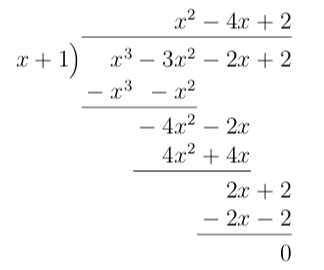
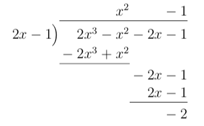
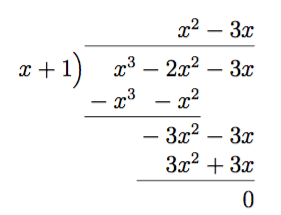
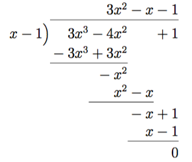
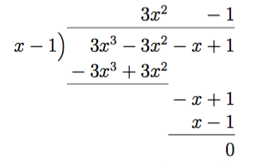
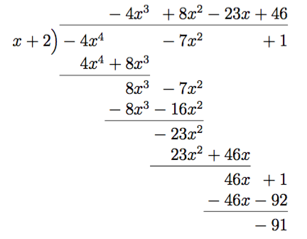
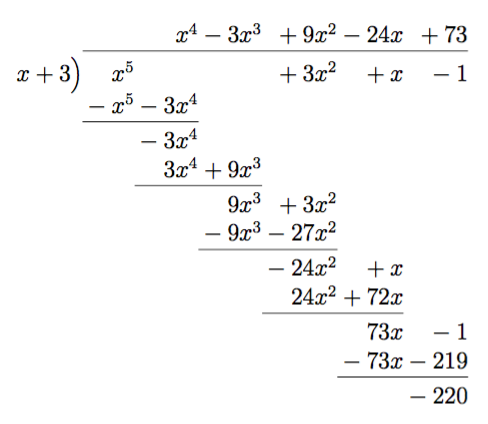
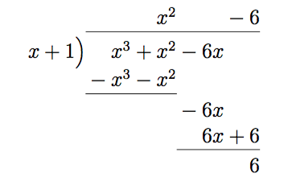

2. Division av polynom
Utför divisionen \( \dfrac{2827}{11} \) genom att använda dig av trappan.
På motsvarande sätt som vi dividerar heltal med trappan så använder vi oss av samma algoritm för att utföra division av polynom.
Exempel 1 Bestäm \( \dfrac{x^3-3x^2-2x+2}{x+1} \).
Vi får

Exempel 2 Bestäm \( \dfrac{2x^3-x^2-2x-1}{2x-1} \).
Vi får

Denna division går inte jämt ut utan vi får resten \( -2 \). Vi kan uttrycka \( \dfrac{2x^3-x^2-2x-1}{2x-1} = x^2-1 +\dfrac{-2}{2x-1}\)
Tanken är inte att utföra divisionen av polynom på CAS, utan att lära sig själv att räkna. Det går bra att kolla om man har räknat rätt genom att utföra divisionen på CAS.
Uppgifter
- Utför följande divisioner genom att utnyttja dig av divisionstrappan.
- \( \dfrac{448}{8} \)
Vi får \(56 \).
- \( \dfrac{528}{11} \)
Vi får \(48 \).
- \( \dfrac{1625}{13} \)
Vi får \(125 \).
- \( \dfrac{400}{9} \)
Vi får \(44 +\dfrac{4}{9} \).
- \( \dfrac{6814}{12} \)
Vi får \(567 +\dfrac{10}{12} \).
- \( \dfrac{448}{8} \)
- Bestäm
- \( \dfrac{x^3-2x^2-3x}{x+1} \)

Vi får \(x^2-3x \).
- \( \dfrac{3x^3-4x^2+1}{x-1} \)

Vi får \(3x^2-x-1 \).
- \( \dfrac{3x^3-3x^2-x+1}{x-1} \)

Vi får \(3x^2-1 \).
- \( \dfrac{-4x^4-7x^2+1}{x+2} \)

Vi får att \(\dfrac{-4x^4-7x^2+1}{x+2} = -4x^3+8x^2-23x+46 -\dfrac{91}{x+2} \).
- \( \dfrac{x^5+3x^2+x-1}{x+3} \)

Vi får att \(\dfrac{x^5+3x^2+x-1}{x+3} = x^4-3x^3+9x^2-24x+73 -\dfrac{220}{x+3} \).
- \( \dfrac{x^3-2x^2-3x}{x+1} \)
- Formulera algoritmen över hur vi utför en division av polynom.
Lösningen
- Undersök om \( P(x) = x^2+4\) delar polynomet \( Q(x)= x^4+x^3+2x^2+4x-8 \).
Jo, eftersom divisionen går jämt ut.

- Undersök om \( P(x) = x+1 \) delar polynomet \( Q(x)= x^3+x^2-6x \).
Nej, eftersom vi får en rest.

- Polynomet \( P(a) = a^{2017}+a+1 \) delas med polynomet \( a^2-1 \). Vad är resten?
\(2a +1 \), börja dividera i trappan. Efter en stund märker du att du alltid får samma rest.
- För vilket värde på \( a \) kan vi förenkla \( \dfrac{x^3+ax+25}{x+5} \)? Bestäm det förenklade uttrycket.
För \( a = -20 \). Dividera i trappan och få resten \( -5a - 100 \). Resten skall ha värdet 0.
Det förenklade uttrycket är \( x^2 -5x+5 \).
- Då polynomet \( P(x) = x^3+x^2+ax+b \) delas med binomet \( x^2+3 \) går divisionen jämt ut, bildas ingen rest. Bestäm \( P(x) \).
Resten är \( (a-3)x+b-3 \). Den skall ha värdet 0.
Vi får \( P(x) = x^3+x^2+3x+3 \).
- En del av kursen är att lära sig programmera. Gå till tie.koodariksi.fi, registrera dig och börja jobba på Ohjelmoinnin alkeet. Uppe till höger kan du byta språk.
Kom ihåg att be gruppkoden av Kristoffer om du ännu inte gjort det!
Jobba ca en timme med materialet, eller med kapitlen 4-6.